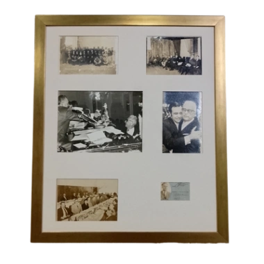

FOTOGRAFÍAS
1. Fotografía con personal de la Oficina Federal de Herencia. Texcoco, México. Año de 1941.
2. Fotografía con militantes del Partido Auténtico de la Revolución Mexicana (PARM). Año 1972.
3. Fotografía en la Mesa Directiva en la H. Cámara de Diputados. Octubre de 1970.
4. Fotografía de Don Roberto Herrera Giovanini junto a su hijo Carlos Herrera Prats. Graduación de la UNAM. Año 1969.
5. Fotografía con los administradores de la Comisión Federal de Electricidad. Ciudad de Xalapa, Ver. Década de los cincuentas.
6. Credencial de Don Roberto Herrera Giovanini de la Comisión Federal de Electricidad.